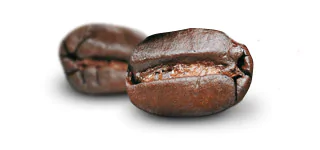
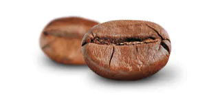
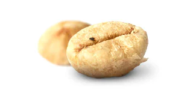

Arabica
Considerados el champan del cafe, los granos de Arabica tienen una asombrosa riqueza aromatica que produce un sabor suave y profundo al mismo tiempo.

Robusta
La cafeina reina del cafe, los granos Robusta, contienen aproximadamente el doble del estimulante que los granos Arabica . Esto le da al cafe un sabor fuerte y ligeramente amargo.

Kopi Luwak
Para obtener una experiencia gourmet poco comun, pruebe los premiados granos extraidos del estiercol de civeta indonesia. Esta criatura similar a una mangosta, se da festines con los frutos del cafe antes de defecar la semilla. El sistema digestivo procesa los frutos otorgandole asi el sabor caracteristico a los granos.